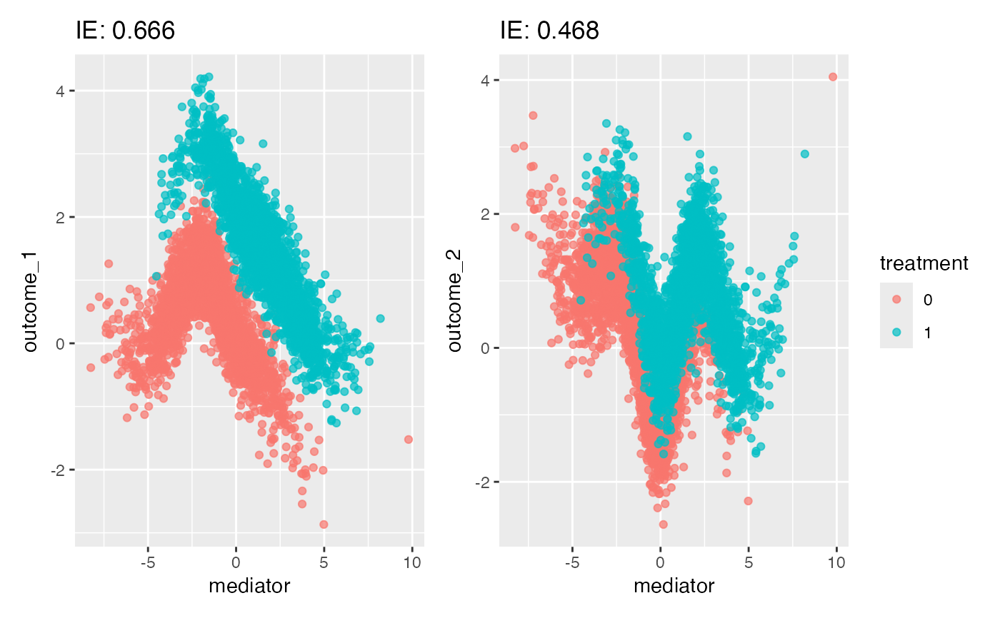
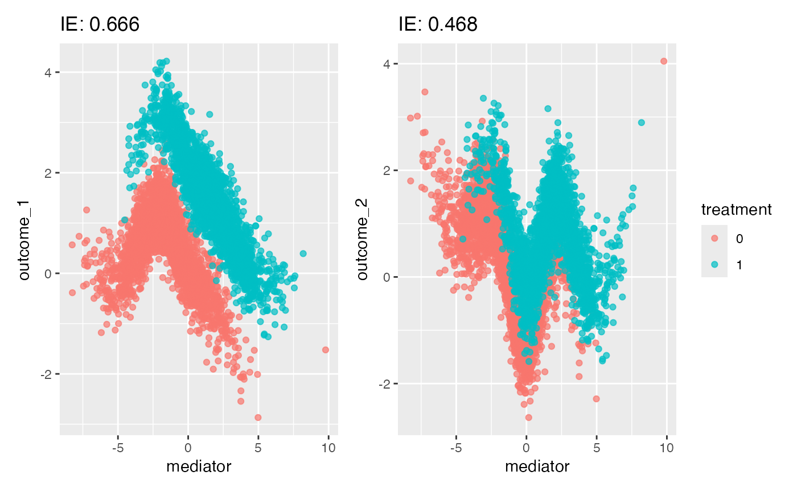

This is a helper function to visualize the raw data responsible for the largest indirect effects. It returns a faceted plot of outcome vs. mediator pairs for those with high pathwise indirect effects.
Usage
plot_mediators(
indirect_effects,
exper,
n_digit = 3,
n_panels = NULL,
treatment = "treatment",
...
)Arguments
- indirect_effects
A data.frame containing estimated indirect effects for each variable, under different counterfactual settings for the "direct treatment." This is the output of
indirect_pathwise.- exper
An object of class
mediation_datacontaining all mediation analysis data.- n_digit
The number of digits of the indirect effects to print next to each panel. Defaults to 3.
- n_panels
The number of mediator-outcome pairs to show. Defaults to 12, or the number of pathways, if there are fewer than 12.
- treatment
What is the name of the treatment variable that we want to overlay on points? This is necessary when there are several potential treatment variables. Defaults to "treatment."
- ...
Further keyword arguments passed to
patchwork::wrap_plots.
Examples
# dataset with no true effects
exper <- demo_joy() |>
mediation_data("PHQ", "treatment", starts_with("ASV"))
ie <- multimedia(exper) |>
estimate(exper) |>
indirect_pathwise() |>
effect_summary()
#> Indirect effects for direct setting 1
#> Indirect effects for direct setting 2
plot_mediators(ie, exper)
 # another dataset
exper <- demo_spline(tau = c(2, 1)) |>
mediation_data(starts_with("outcome"), "treatment", "mediator")
ie <- multimedia(exper, rf_model()) |>
estimate(exper) |>
indirect_pathwise() |>
effect_summary()
#> Indirect effects for direct setting 1
#> Indirect effects for direct setting 2
plot_mediators(ie, exper)

# another dataset
exper <- demo_spline(tau = c(2, 1)) |>
mediation_data(starts_with("outcome"), "treatment", "mediator")
ie <- multimedia(exper, rf_model()) |>
estimate(exper) |>
indirect_pathwise() |>
effect_summary()
#> Indirect effects for direct setting 1
#> Indirect effects for direct setting 2
plot_mediators(ie, exper)
